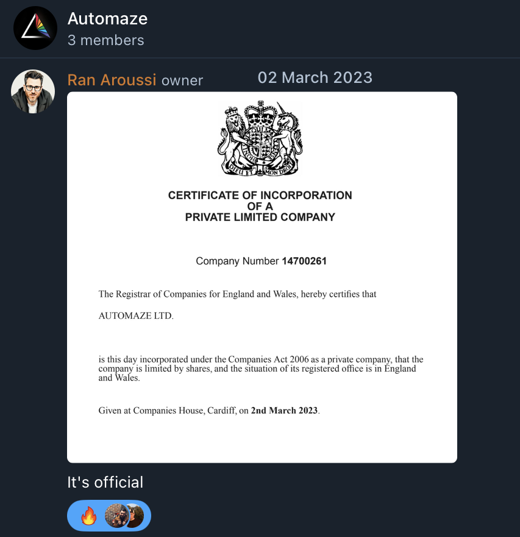

Our Values
Strategic Minimalism
Cut the noise, amplify the impact. We focus on what matters most, stripping away the rest.Resilient Problem-Solving
Obstacles are just opportunities in disguise. We push through challenges, emerging stronger each time.Open-Minded Innovation
We thrive on diverse ideas and perspectives, turning them into breakthrough solutions. Innovation starts with being open to the unexpected.Collaborative Mastery
Alone, we’re skilled - together, we’re unstoppable. We harness the power of teamwork to achieve excellence.Hustle with Purpose
We hustle hard, but always with intention. It’s not just about working more—it's about working smart.How everything began
Half a decade ago, we were deep in the trenches of building a fintech startup. It was a wild ride, full of massive tech challenges and late-night coding marathons. The startup eventually wrapped up its “stealth mode” a bit too well, but we emerged with something even more valuable - a solid team and a love for solving the impossible.
Then one day, a friend casually asked for help with some code optimization. Little did we know, that small favor would spark something big. We quickly realized that the market was brimming with companies bogged down by technical debt - systems that worked, but could work better. And just like that, we found our calling: transforming the “it’s fine for now” into “why didn’t we do this sooner?”
We found ourselves often “changing the wheels on a moving car,” and guess what? We loved it. The thrill of turning roadblocks into breakthroughs was too good to resist. That’s when we knew we were onto something.
And just like that, Automaze was born. We became the go-to team for businesses looking to turn their toughest tech challenges into success stories. Our journey from stealth-mode survivors to technical problem solvers is a testament to one thing: with the right drive, anything is possible.
To be continued...
We're just scratching the surface. As we continue to navigate the ever-evolving tech landscape, one thing remains clear: the best is yet to come. Join us on this journey - where every challenge is a new opportunity, and every success story is just the beginning.
Ready to create the next chapter with us?